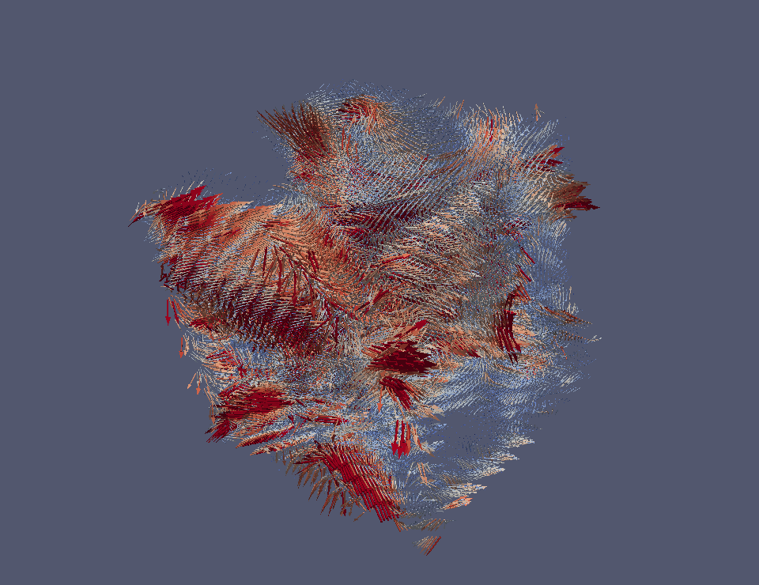

The previous simulation still leaves room for a reasonable doubt: the initial configuration is not
isotropic, even in a statistical sense. There is a preferred spatial axis and a few dominant $\vec \theta$
and $\vec A$ directions. Could this explain the preference for the $\theta_3$ component?
To rule this out, let's try a generic 3D initial configuration:
Initial $\vec \theta$ configuration. Color encodes $|\vec \theta|$ (red is larger).

Initial $\vec B$ configuration. Color encodes $|\vec B|$ (red is larger).
Initial energy density.
The biggest difference from the previous case is a much smaller domain boundary bump in the initial energy distribution:
Initial energy distribution (kernel density estimate, Gaussian smoothing).
The simulation was again run for 64 lattice time units with a time step $10^{-3}$. It took six days to complete.
The initial wavefronts again dissolve quickly:
Energy density.
$\vec \theta$ energy density.
$\vec B$ energy density.
$\vec E$ energy density.
Cross term energy density.
As before, the total energy distribution at the end of the simulation does not look quite thermal, but the distributions
of the individual contributions do, with higher temperatures for the electromagnetic and cross terms:
Total energy distribution at t = 64 (kernel density estimate, Gaussian smoothing) and best $\Gamma(1.5, 1/\beta)$ fit.
$\vec \theta$ energy distribution at t = 64 (kernel density estimate, Gaussian smoothing) and best $\Gamma(1.5, 1/\beta)$ fit.
$\vec B$ energy distribution at t = 64 (kernel density estimate, Gaussian smoothing) and best $\Gamma(1.5, 1/\beta)$ fit.
$\vec E$ energy distribution at t = 64 (kernel density estimate, Gaussian smoothing) and best $\Gamma(1.5, 1/\beta)$ fit.
Cross term energy distribution at t = 64 (kernel density estimate, Gaussian smoothing) and best $\Gamma(1.5, 1/\beta)$ fit.
The magnetic field energy of the initial configuration is again primarily converted to electromagnetic waves, while
little energy is transferred to $\vec \theta$:
Evolution of contributions to total energy.
Photon masses again decline after the initial jump:
Evolution of average photon mass eigenvalues.
High photon mass eigenvalue.
Middle photon mass eigenvalue.
Low photon mass eigenvalue.
Also in this case, the dynamics start driving $\vec \theta$ to $\theta_3$ almost immediately:
Evolution of average $n_a = |\theta_a| / |{\vec \theta}|$.
Evolution of average $\Theta_a^2$.
Watch $\vec \theta$ line up:
Evolution of $\vec \theta$. Color encodes $|\vec \theta|$ (red is larger).
Evolution of $\vec \theta$ (scatter plot). Color encodes total energy density at each dot's spatial position.
Note that the $\vec \theta$ vectors do not all point the same way. They are clustered around the $\theta_3$ axis,
but on both sides of the origin and with a small number of fast-moving outliers on the enclosing sphere.
$\vec \theta$ configuration at t = 64. Color encodes $|\vec \theta|$ (red is larger).